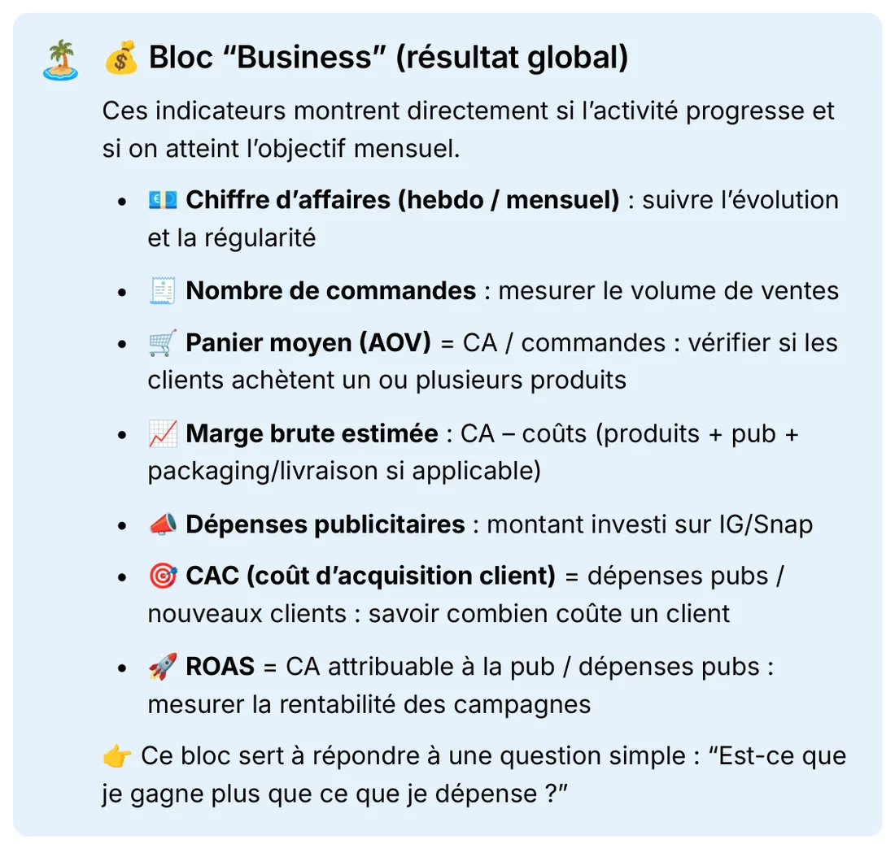

Achats, vente et relation client · BC5 · BUT 3
Niveau 2 : Piloter la gestion de la relation client
Niveau attendu en troisième année : compétent. 6 apprentissages critiques, chacun avec ce qu’il recouvre, la situation où je l’ai travaillé et mes traces.
Apprentissages critiques du niveau 2
- AC35.01MCMO
Faire le suivi des ventes, avec l’aide des documents commerciaux et des rapports du service après vente, pour mettre en place des actions publicitaires et de promotions, ou un programme de fidélisation
Analyser les ventes et les retours du service après-vente pour décider d’actions promotionnelles ou d’un programme de fidélisation.
Pour suivre les ventes de Paradise Parfum, qui se concluent en message privé, nous avons construit un tableau de bord en trois blocs : un bloc business, avec le chiffre d’affaires, les commandes, le panier moyen, la marge, le coût d’acquisition client et le retour sur dépenses publicitaires ; un bloc acquisition par canal, du taux de clic au coût par message reçu ; un bloc conversion et fidélisation, du taux de passage du message à la commande au taux de réachat à 30 et 60 jours. Nous avons fixé un rythme d’analyse, quelques minutes par jour, un point hebdomadaire et un bilan mensuel, puis tiré de ces indicateurs les actions d’un plan sur six mois visant 1 000 € de chiffre d’affaires mensuel : tests de publicités, retargeting, avis clients mis en avant, récompense à la deuxième commande et parrainage.
Avec le recul, le tableau de bord n’avait pas encore été alimenté sur une vraie période au moment du rendu : ses seuils de décision restent à éprouver.
TracesAudit et stratégie outbound de Paradise Parfum, tableau de bord des indicateurs (groupe)

Bloc « Business » du tableau de bord de Paradise Parfum. - AC35.02MCMO
Gérer la force de vente, en procédant au recrutement de l’équipe, en veillant à un dimensionnement correct, et en utilisant les outils d’animation et de reporting, pour en maintenir la cohésion, la motivation et la performance
Recruter, dimensionner et animer une équipe commerciale, suivre ses résultats grâce au reporting et entretenir sa motivation.
Le cas HERMISTE, en management commercial, consistait à dimensionner la force de vente d’une entreprise qui réalise 80,6 millions d’euros de chiffre d’affaires sur trois canaux : la grande distribution, les magasins spécialisés et les indépendants de centre-ville. Du nombre de magasins, de la fréquence et de la durée des visites, on tire le besoin annuel en heures ; de la capacité réelle d’un commercial, après congés, absences et temps consacré à d’autres activités, l’effectif nécessaire : 43, 34 et 4 commerciaux, 81 au total. La marge brute par commercial va de 26 900 € en grande distribution à 263 400 € chez les indépendants, d’où trois recommandations : garder la spécialisation par canal, réorienter le temps de prospection vers les canaux les plus rentables et alléger la pression sur la grande distribution avec un CRM, le tout suivi par un reporting mensuel.
Avec le recul, le cas dimensionne et compare, mais ne traite ni le recrutement ni la motivation de l’équipe, que vise aussi cet apprentissage ; et je n’ai pas encadré de commerciaux cette année.
TracesCas HERMISTE : dimensionner une force de ventePDF

Dimensionnement de la force de vente : besoin en heures, capacité réelle, effectifs. - AC35.03MCMO
Prospecter et qualifier un fichier client, dans un objectif de déploiement commercial, de démarche qualité ou de programme de fidélisation
Rechercher de nouveaux clients, enrichir et nettoyer le fichier, puis classer les contacts selon leur potentiel.
Pour la ressource de prospection et de gestion de la relation client, nous avons prospecté à six, d’octobre à décembre 2025, 300 établissements publics du Doubs pour le compte de CR Qualité, un cabinet belfortain d’audit, d’hygiène, de sécurité et de qualité qui venait d’être qualifié pour le label Services Publics +. Après avoir délimité la zone et constitué le fichier, nous avons préparé ensemble un pitch, puis l’avons ajusté au fil des appels selon l’interlocuteur, secrétariat, direction ou service administratif. Le groupe travaillait en deux équipes, avec un tableau de suivi Excel et un CRM sur Monday.com. Sur 289 appels, 181 ont obtenu une réponse, soit 62,6 % ; 43 contacts sont à rappeler et 41 adresses e-mail ont été collectées.
Avec le recul, le pitch est resté commun à toutes les cibles et ne s’est adapté qu’en cours de campagne ; décliné dès le départ par type d’établissement, il aurait sans doute obtenu plus de rendez-vous.
TracesDossier CR Qualité : prospection et audit du site (groupe de six)PDFTableau de suivi Excel et CRM Monday.com (groupe)

Résultats des 300 contacts ciblés, tirés du tableau de suivi. 
Plan de travail de la campagne, séance par séance. - AC35.04MCMO
Analyser un fichier clients et faire des propositions d’actions
Segmenter la base clients, par exemple selon la récence, la fréquence et le montant des achats, puis proposer des actions ciblées pour chaque segment.
Le cas TechStyle, en management commercial, part des réponses de 300 clients : 35 % de promoteurs et 25 % de détracteurs, soit un score de recommandation de 10. Le plan classe cinq problèmes, des délais de livraison au rapport qualité-prix, puis remonte par la méthode des cinq pourquoi aux causes de la chute de 18 % du chiffre d’affaires du segment fitness, une gamme figée depuis deux ans, et du faible score de recommandation, des livraisons en sept à dix jours. Il en tire deux actions chiffrées, un transporteur express pour livrer en moins de trois jours et une version 2.0 de la gamme fitness, et trois objectifs SMART pour 2026. Pour CR Qualité, l’analyse des résultats de la campagne a aussi isolé les 43 contacts à rappeler et les 41 adresses e-mail collectées, base des relances.
Avec le recul, ces analyses partent de résultats déjà agrégés : je n’ai pas segmenté moi-même un fichier clients, par exemple selon la récence, la fréquence et le montant des achats.
TracesPlan d’action TechStyle 2026, à partir d’une analyse du NPSPDFDossier CR Qualité, analyse des résultats (groupe de six)PDF

État des lieux : 35 % de promoteurs, 25 % de détracteurs, un score de 10. 
Plan d’action correctif : deux leviers chiffrés, avec responsable, délai et indicateur. - AC35.05MCMO
Négocier en processus vente, en utilisant les techniques de vente et de communication orale, et en mettant en œuvre des qualités personnelles propices pour convaincre
Conduire un entretien de vente de la découverte du besoin jusqu’à la conclusion, en argumentant et en traitant les objections.
La grille des compétences de troisième année admet une négociation en position de vendeur comme d’acheteur. Côté acheteur, en cours d’achats, j’ai travaillé une négociation à partir d’un besoin chiffré : un délai d’intervention de quatre heures au plus, 96 % de délais respectés, un intérêt technique d’au moins 7 sur 10, un budget de 40 000 €, une assistance à 10 € de l’heure au plus et une note qualité d’au moins 70 sur 100. La comparaison des trois offres fait ressortir, pour chaque fournisseur, les trois clauses incontournables à négocier, et une grille de dépouillement pondérée désigne le même fournisseur selon les trois modèles de décision, compensatoire, lexicographique et conjonctif. Côté vendeur, au téléphone pour CR Qualité, nous traitions les objections « pas de budget cette année », « la décision doit passer par le comité » ou « nous avons déjà un prestataire » avec la méthode CAP : comprendre, argumenter, prouver.
Avec le recul, je n’ai pas encore négocié moi-même un prix ou un délai face à un fournisseur : les deux marchés que j’ai menés jusqu’à leur publication sont des appels d’offres ouverts, où la négociation n’est pas permise.
TracesExercices du cours d’achats : grilles de dépouillement et de négociationRapport de prospection téléphonique, traitement des objections (groupe de six)

La méthode CAP pour traiter les objections, extraite de notre rapport de prospection. - AC35.06MCMO
Faire le suivi de la négociation, par le biais des outils du CRM, l’utilisation de la communication écrite et orale, pour veiller à la satisfaction du client et à sa fidélisation
Après la vente, veiller au respect des engagements, garder le contact à l’écrit comme à l’oral, tracer les échanges dans le CRM et mesurer la satisfaction.
Après chaque appel de la campagne CR Qualité, nous alimentions le CRM Monday.com avec les retours, les adresses et le niveau d’intérêt, pour relancer le bon établissement au bon moment ; 43 contacts restaient à rappeler à la fin. En stratégie inbound, j’ai rédigé l’e-mail de fidélisation d’un food truck de Montbéliard : un merci sincère aux clients fidèles, une remise de 10 % avec un code valable une semaine, les valeurs de la marque rappelées et un lien vers les plats. En alternance, le suivi concerne aussi les clients internes : quand une commande de tote bags destinée aux ressources humaines a pris quelques jours de retard chez le fournisseur, j’ai prévenu le service en expliquant la cause, puis transmis la nouvelle date dès qu’elle a été confirmée.
Avec le recul, les relances restaient manuelles : je n’ai pas encore mis en place de séquence automatisée dans un CRM, ni mesuré l’effet d’un e-mail de fidélisation.
TracesDossier CR Qualité, suivi dans le CRM (groupe de six)PDFE-mail de fidélisation d’un food truck (individuel)Suivi des fournisseurs en alternance (document interne)

L’e-mail de fidélisation : remerciement, remise limitée dans le temps et valeurs de la marque.

Bilan du niveau 2
Points forts : prospecter à grande échelle avec un suivi dans un CRM, dimensionner une force de vente, tirer d’une enquête de satisfaction un plan d’action chiffré et préparer une négociation à partir d’un besoin précis.
À renforcer : la négociation réelle, face à un fournisseur ou à un client, et l’automatisation du suivi client.
Pour la suite : mener mes premières négociations en alternance, sur des achats dont la procédure le permet.